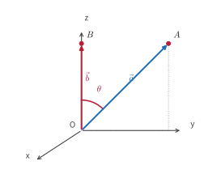
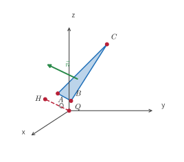
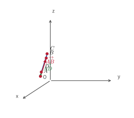
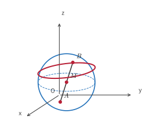
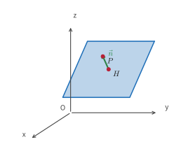
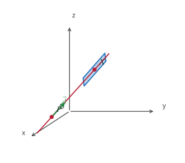
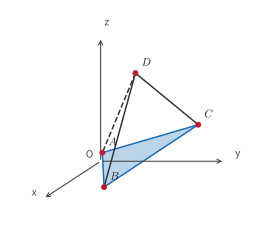
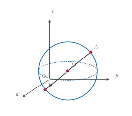
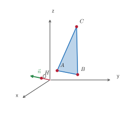
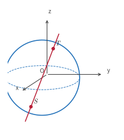

別冊章末問題の解答
1. \(\vec a=\left(0,\ 1,\ 1\right),\ \vec b=\left(0,\ 0,\ 1\right)\) のとき、\(\vec a\cdot\vec b\)、\(|\vec a|,\ |\vec b|\) と、なす角 \(\theta\) を求めよ。
内積
\(\vec a\cdot\vec b=a_1b_1+a_2b_2+a_3b_3\)。
\[\vec a\cdot\vec b=0\cdot0+1\cdot0+1\cdot1=1\]大きさ
\[|\vec a|=\sqrt{0^2+1^2+1^2}=\sqrt{2}\]\[|\vec b|=\sqrt{0^2+0^2+1^2}=\sqrt{1}=1\]\(\cos\theta\)
\[\cos\theta=\dfrac{1}{\sqrt{2}\times1}=\dfrac{\sqrt{2}}{2}\]なす角
2つのベクトルを原点から引くと、その間の角が \(\theta\) である（図）。

（例題1の型）
【答案】
\[\vec a\cdot\vec b=1,\ |\vec a|=\sqrt{2},\ |\vec b|=1,\ \theta=45^\circ\]答
2. 3点 \(A\left(1,\ 0,\ 1\right),\ B\left(2,\ 1,\ 1\right),\ C\left(1,\ 2,\ 3\right)\) を通る平面の方程式と、点 \(Q\left(0,\ 0,\ 0\right)\) からこの平面までの距離を求めよ。
平面の法線ベクトル \(\vec n=(a,b,c)\)
\(\overrightarrow{AB}=\left(1,\ 1,\ 0\right),\ \overrightarrow{AC}=\left(0,\ 2,\ 2\right)\)。
\[\begin{cases}\vec n\cdot\overrightarrow{AB}=0\\ \vec n\cdot\overrightarrow{AC}=0\end{cases}\]\[\begin{cases}a + b=0\\ 2 b + 2 c=0\end{cases}\]\(\vec n\) を1つ求める
\(a\) を決めると \(b,\ c\) が決まる（\(a\) を文字のまま残して解く）。
\[b=- a,\quad c=a\]分数が消えるように \(a\) を選ぶ。
\[a=1\ \text{のとき}\ b=-1,\ c=1\]\[\vec n=\left(1,\ -1,\ 1\right)\]図：平面 \(ABC\) に垂直な \(\vec n\) と、点 \(Q\) から平面に下ろした垂線 \(QH\)（赤の破線）。

平面の方程式
点 \(A\left(1,\ 0,\ 1\right)\) を通るので
\[x - y + z - 2=0\]\[x - y + z=2\]点 \(Q\) との距離
\(\dfrac{|ax_0+by_0+cz_0-d|}{\sqrt{a^2+b^2+c^2}}\)。
\[\dfrac{|1\cdot0+(-1)\cdot0+1\cdot0-2|}{\sqrt{1^2+(-1)^2+1^2}}\]\[=\dfrac{|0-2|}{\sqrt{3}}=\dfrac{2}{\sqrt{3}}=\dfrac{2 \sqrt{3}}{3}\]（例題2の型）
【答案】
\[x - y + z=2,\ \ \text{距離 }\dfrac{2 \sqrt{3}}{3}\]答
3. 空間に3点 \(A\left(2,\ 0,\ 1\right),\ B\left(3,\ 1,\ 3\right),\ C\left(5,\ 2,\ 4\right)\) がある。四角形 \(ABCD\) が平行四辺形となるように点 \(D\) をとるとき、\(D\) の座標と平行四辺形の面積を求めよ。
第4の頂点 \(D\)
平行四辺形 \(ABCD\) では \(\overrightarrow{AD}=\overrightarrow{BC}\)。
\[D=A+C-B=\left(4,\ 1,\ 2\right)\]\[=\left(2+5-3,\ 0+2-1,\ 1+4-3\right)\]図：向かい合う辺 \(AB\) と \(DC\)、\(AD\) と \(BC\) が平行で等しい。

2辺のベクトル
\[\overrightarrow{AB}=B-A=\left(1,\ 1,\ 2\right),\quad \overrightarrow{AD}=D-A=\left(2,\ 1,\ 1\right)\]面積
\(S=\sqrt{|\overrightarrow{AB}|^2|\overrightarrow{AD}|^2-(\overrightarrow{AB}\cdot\overrightarrow{AD})^2}\)。
\[|\overrightarrow{AB}|^2=1^2+1^2+2^2=6\]\[|\overrightarrow{AD}|^2=2^2+1^2+1^2=6\]\[\overrightarrow{AB}\cdot\overrightarrow{AD}=1\cdot2+1\cdot1+2\cdot1=5\]\[S=\sqrt{6\times6-5^2}=\sqrt{11}=\sqrt{11}\]（例題3の型）
【答案】
\[D\left(4,\ 1,\ 2\right),\ S=\sqrt{11}\]答
4. 2点 \(A\left(2,\ 1,\ 0\right),\ B\left(4,\ 3,\ 4\right)\) を直径の両端とする球面 \(S\) の方程式を求めよ。また、\(S\) を平面 \(z=3\) で切った切り口の円の半径を求めよ。
中心は中点
直径の両端 \(A,B\) の中点が球の中心。
\[M=\left(\dfrac{2+4}{2},\ \dfrac{1+3}{2},\ \dfrac{0+4}{2}\right)=\left(3,\ 2,\ 2\right)\]図：直径 \(AB\)、中心 \(M\)、平面 \(z=3\) での切り口（赤い円）。

半径は直径の半分
\[|AB|^2=2^2+2^2+4^2=24\]\[r^2=\dfrac{|AB|^2}{4}=\dfrac{24}{4}=6\]球面の方程式
\[(x-3)^2+(y-2)^2+(z-2)^2=6\]平面 \(z=3\) での切り口
\(z=3\) を代入する。
\[(x-3)^2+(y-2)^2=6-(3-2)^2=5\]中心 \(\left(3,\ 2,\ 3\right)\)、半径 \(\sqrt{5}\) の円。
（例題4の型）
【答案】
\[(x-3)^2+(y-2)^2+(z-2)^2=6,\ \ \text{半径 }\sqrt{5}\]答
5. 平面 \(\alpha:\ 3 x + 4 z=10\) と点 \(P\left(1,\ 2,\ 3\right)\) がある。\(P\) から \(\alpha\) に下ろした垂線の足 \(H\) の座標と、\(P\) と \(\alpha\) の距離を求めよ。
垂線の足を \(P\) から表す
平面の法線ベクトルは \(\vec n=\left(3,\ 0,\ 4\right)\)。\(H\) は \(P\) から \(\vec n\) 方向に進んだ点。
\[\overrightarrow{PH}=-t\,\vec n,\quad H=\left(- 3 t + 1,\ 2,\ - 4 t + 3\right)\]\(H\) が平面上にある条件
\[3(- 3 t + 1)+0(2)+4(- 4 t + 3)=10\]\[15-25\,t=10\ \Rightarrow\ t=\dfrac{1}{5}\]\(H\) の座標と距離
\(t=\dfrac{1}{5}\) を \(H=P-t\,\vec n\) に戻す。

（例題5の型）
【答案】
\[H\left(\dfrac{2}{5},\ 2,\ \dfrac{11}{5}\right),\ \ \text{距離 }1\]答
6. 点 \((2,\ -1,\ 0)\) を通り、方向ベクトル \((1,\ 2,\ 2)\) の直線と、平面 \(x - 2 y + 2 z=7\) の交点の座標を求めよ。
直線のパラメータ表示
直線上の点：
\[(x,y,z)=(t + 2,\ 2 t - 1,\ 2 t)\]平面に代入
平面 \(x - 2 y + 2 z=7\) の \(x,y,z\) に直線上の点を代入：
\[\left(t + 2\right)+(-2)\left(2 t - 1\right)+2\left(2 t\right)=7\]展開して \(t\) の1次方程式にする。
\[t + 4=7\]\[t=3\]交点
\(t=3\) を \((x,y,z)\) に戻す。
\[(x,y,z)=(t + 2,\ 2 t - 1,\ 2 t)=(5,\ 5,\ 6)\]図：直線（赤）が平面（青）と1点で交わる。

（例題6の型）
【答案】
\[(5,\ 5,\ 6)\]答
7. 4点 \(A(2,\ 1,\ 1),\ B(4,\ 2,\ 0),\ C(1,\ 5,\ 2),\ D(3,\ 3,\ 5)\) を頂点とする四面体 \(ABCD\) の体積を求めよ。
辺のベクトル
\[\overrightarrow{AB}=\begin{pmatrix}2\\1\\-1\end{pmatrix},\quad \overrightarrow{AC}=\begin{pmatrix}-1\\4\\1\end{pmatrix},\quad \overrightarrow{AD}=\begin{pmatrix}1\\2\\4\end{pmatrix}\]
外積
\(\vec u\times\vec v=(u_2v_3-u_3v_2,\ u_3v_1-u_1v_3,\ u_1v_2-u_2v_1)\)。
\[\overrightarrow{AB}\times\overrightarrow{AC}=\left(1\cdot1-(-1)\cdot4,\ (-1)\cdot(-1)-2\cdot1,\ 2\cdot4-(-1)\right)\]\[=\begin{pmatrix}5\\-1\\9\end{pmatrix}\]体積
図：四面体 \(ABCD\)（底面 \(ABC\)、頂点 \(D\)）。

（例題7の型）
【答案】
\[\dfrac{13}{2}\]答
8. 2点 \(A(-1,\ 3,\ 2),\ B(3,\ 1,\ 0)\) を直径の両端とする球面の方程式を求めよ。
中心と半径
\(AB\) の中点が中心。
\[M=\left(\dfrac{(-1)+3}{2},\ \dfrac{3+1}{2},\ \dfrac{2}{2}\right)=(1,\ 2,\ 1)\]\[AB^2=4^2+(-2)^2+(-2)^2=24\]\[r^2=\left(\dfrac{AB}{2}\right)^2=\dfrac{24}{4}=6\]
球面の方程式
中心 \(M\)、半径 \(r\) の球面 \((x-a)^2+(y-b)^2+(z-c)^2=r^2\) に代入する。
\[(x-1)^2+(y-2)^2+(z-1)^2=6\]別解
\(\overrightarrow{PA}\cdot\overrightarrow{PB}=0\) を成分で書いても同じ式になる。
（例題8の型）
【答案】
\[(x-1)^2+(y-2)^2+(z-1)^2=6\]答
9. 3点 \(A(1,\ 1,\ 1),\ B(2,\ 3,\ 1),\ C(0,\ 2,\ 4)\) を通る平面の方程式と、原点からこの平面までの距離を求めよ。
法線ベクトル
\[\overrightarrow{AB}=\begin{pmatrix}1\\2\\0\end{pmatrix},\quad \overrightarrow{AC}=\begin{pmatrix}-1\\1\\3\end{pmatrix}\]\[\overrightarrow{AB}\times\overrightarrow{AC}=\left(2\cdot3-0\cdot1,\ 0\cdot(-1)-1\cdot3,\ 1\cdot1-2\cdot(-1)\right)=\begin{pmatrix}6\\-3\\3\end{pmatrix}\]
各成分を \(3\) でわって、向きが同じ短いベクトルにする。
\[\vec n=\begin{pmatrix}2\\-1\\1\end{pmatrix}\]平面の方程式
\(\vec n=(a,b,c)\) のとき平面は \(ax+by+cz=d\)。点 \(A(1,\ 1,\ 1)\) を通るので \(d\) を決める。
\[d=2\cdot1+(-1)\cdot1+1\cdot1=2\]\[2 x - y + z=2\]原点との距離
\(\dfrac{|a x_0+b y_0+c z_0-d|}{\sqrt{a^2+b^2+c^2}}\) に \((x_0,y_0,z_0)=(0,0,0)\) を代入する。
\[\dfrac{|2\cdot0+(-1)\cdot0+1\cdot0-2|}{\sqrt{2^2+(-1)^2+1^2}}=\dfrac{2}{\sqrt{6}}=\dfrac{\sqrt{6}}{3}\]図：原点 \(O\) から平面に下ろした垂線の足 \(H\) までの長さが距離。

（例題9の型）
【答案】
\[2 x - y + z=2,\ \ \text{距離 }\dfrac{\sqrt{6}}{3}\]答
10. 球面 \((x-2)^2+y^2+z^2=49\) と、点 \((2,\ 0,\ 0)\) を通り方向ベクトル \((2,\ 3,\ 6)\) の直線との交点を求め、この直線が球面から切り取る弦の長さを求めよ。
直線上の点
\[(x,y,z)=(2 t + 2,\ 3 t,\ 6 t)\]
球面の式に代入
\((x-a)^2+(y-b)^2+(z-c)^2=r^2\) の \(x,y,z\) を \(t\) の式にする。
\[\left(2 t\right)^2+\left(3 t\right)^2+\left(6 t\right)^2=49\]展開して整理する。
\[49 t^{2} - 49=0\]\[49 \left(t - 1\right) \left(t + 1\right)=0\ \Rightarrow\ t=-1,\ 1\]交点と弦の長さ
各 \(t\) の値を \((x,y,z)\) に戻す。
\[t=-1:\ (0,\ -3,\ -6),\qquad t=1:\ (4,\ 3,\ 6)\]図：直線と球面の2つの交点。弦の長さは2点間の距離。

（例題10の型）
【答案】
\[(0,\ -3,\ -6),\ (4,\ 3,\ 6),\ \text{弦 }14\]答